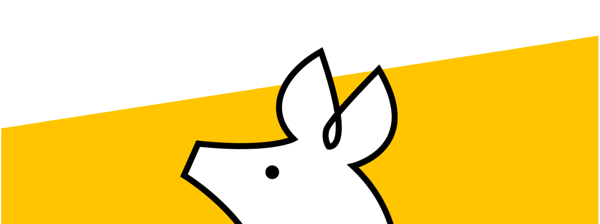
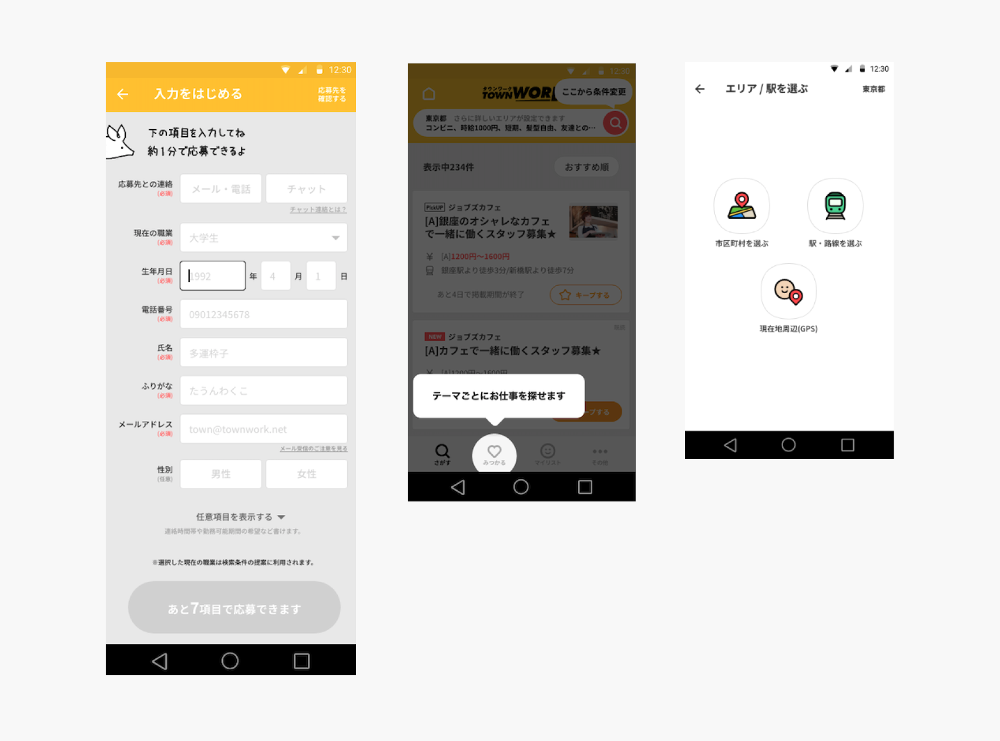

HRサービスのUIデザイン作成にとどまらず、デザイン組織内のオンボーディング方針の仕組み化や、リモート環境下における組織のエンゲージメント向上を目指したワークショップ設計を推進しました。
プロダクトのUI制作だけでなく、組織の成長を支える「人・関係性」に関わる課題解決を同時に行いました。
ユーザーの業務効率化に貢献するため、明確で認知負荷の低い画面UIを作成しました。

これまで組織内で明文化されていなかった新規参画者向けのオンボーディング方針およびメンター制度を明確に規定しました。
サービスをまたいだコミュニケーションが発生しにくく、帰属意識が育ちにくいフルリモート環境の課題に対し、自己開示をテーマにしたワークショップを企画しました。
【ワークショップの概要】
ツール/手法：wevox values card（価値観カード）の活用
内容：「仕事において大切にしていること」をテーマに、カード選択をきっかけとして参加者同士で雑談・議論を行うことで、価値観の相互理解を深める機会を提供。
プロダクトの品質向上には、それを制作・運用するチームの心理的安全性やコミュニケーションの質が不可欠であることを実感しました。
画面を作るデザイナーにとどまらず、チームメンバーが最高のパフォーマンスを発揮できる環境・プロセスを自ら構築する視点を持って組織開発に関わり続けます。